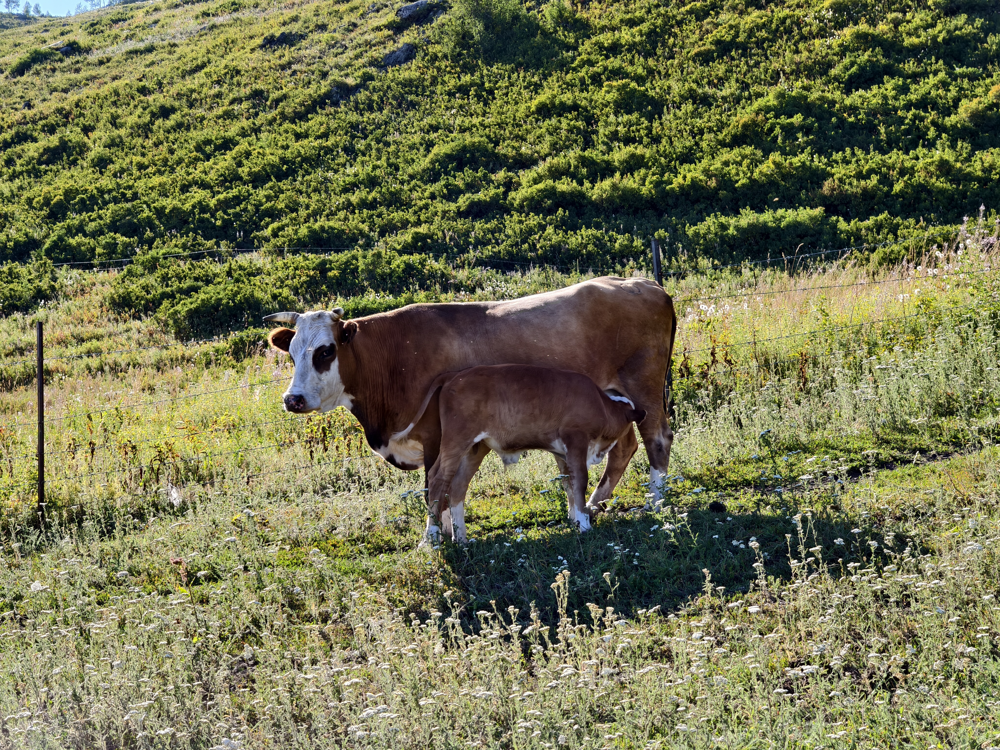
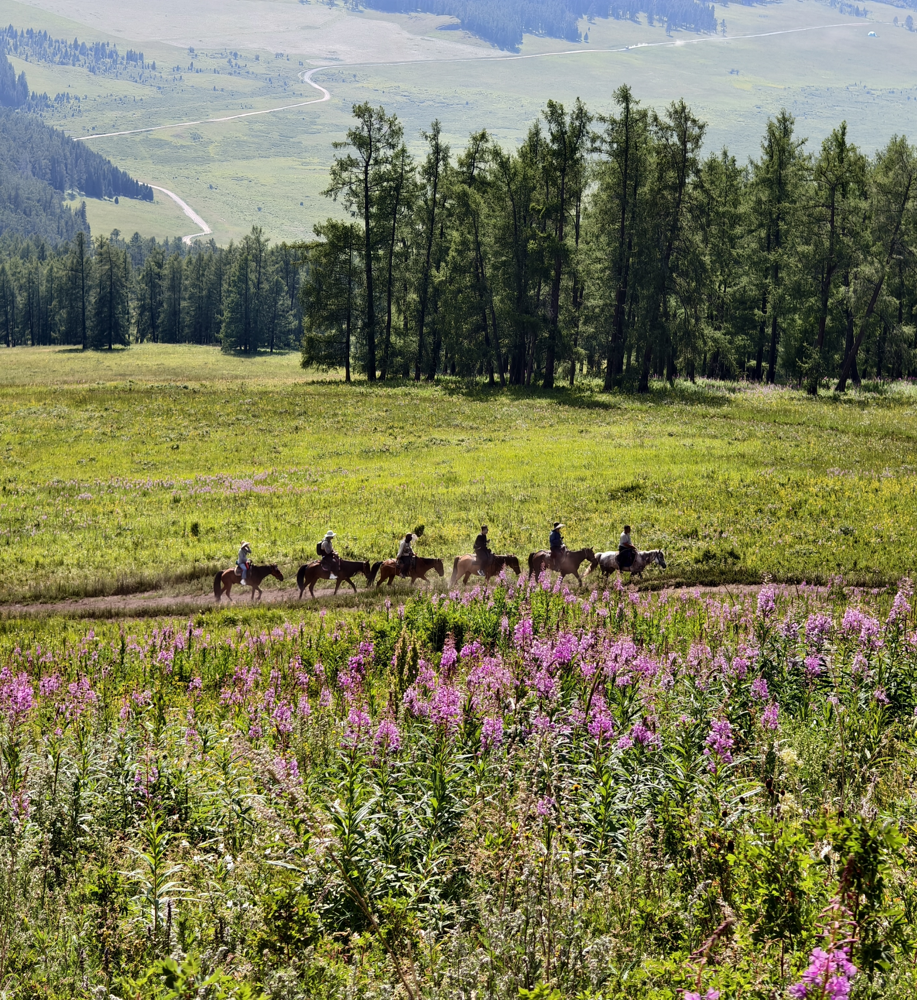

新疆旅行


草原的广阔，让野马再也回不了逼仄
我仍然记得远山对我的吸引，爬过木头栈桥，穿过湿润的森林，走过湍流上的吊桥，越过草原，才堪堪到山脚下。
路上，一旁豢养着群马的人家，遇到几个小孩。我问小孩，上山的路怎么走啊，他操着生疏的口音，用奇怪的断句一点点吐出自己的话语，你喝酸奶子不？
再向上走，小心翼翼从牛群中走过，两个人骑着马缓缓的从后方骑过来，告诉我前面没有人走的路了。望着一旁围起的花田，和远处的马林，我又开始下山。


草原的广阔，让野马再也回不了逼仄
我仍然记得远山对我的吸引，爬过木头栈桥，穿过湿润的森林，走过湍流上的吊桥，越过草原，才堪堪到山脚下。
路上，一旁豢养着群马的人家，遇到几个小孩。我问小孩，上山的路怎么走啊，他操着生疏的口音，用奇怪的断句一点点吐出自己的话语，你喝酸奶子不？
再向上走，小心翼翼从牛群中走过，两个人骑着马缓缓的从后方骑过来，告诉我前面没有人走的路了。望着一旁围起的花田，和远处的马林，我又开始下山。